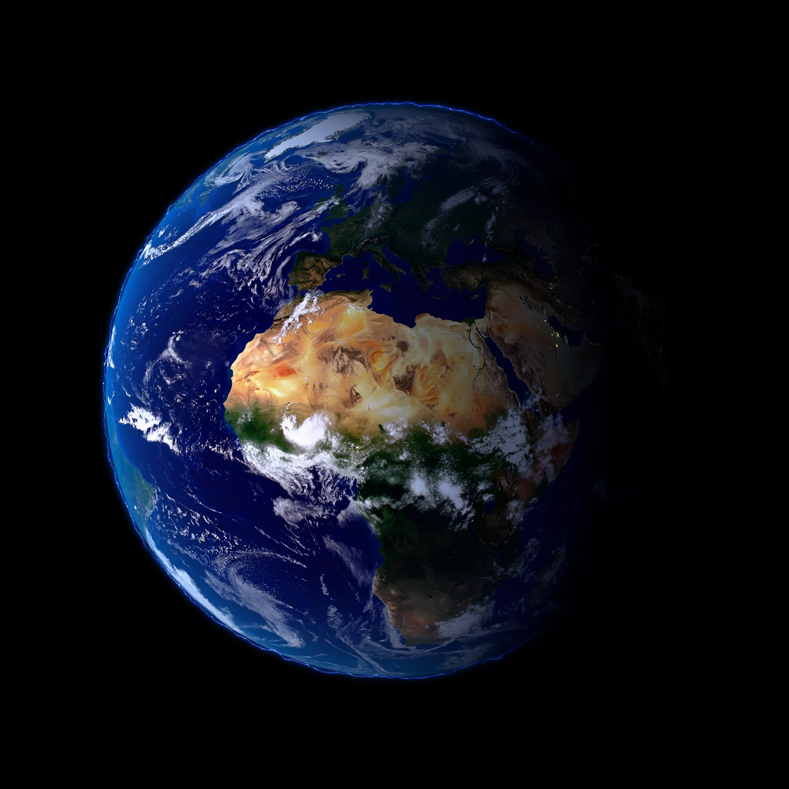
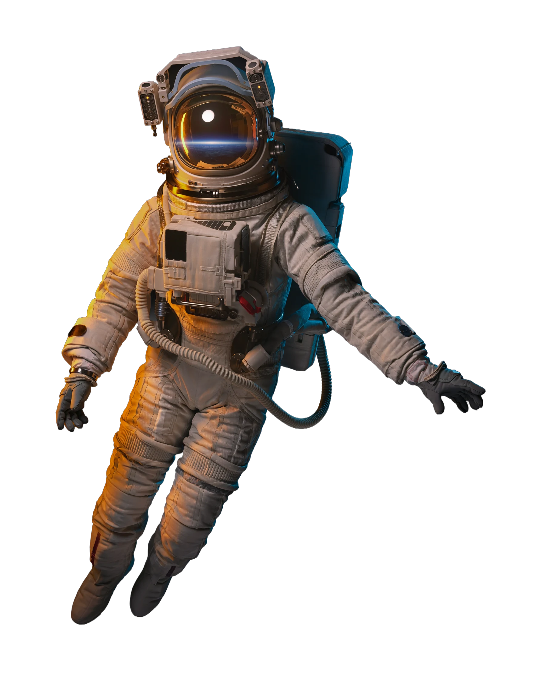
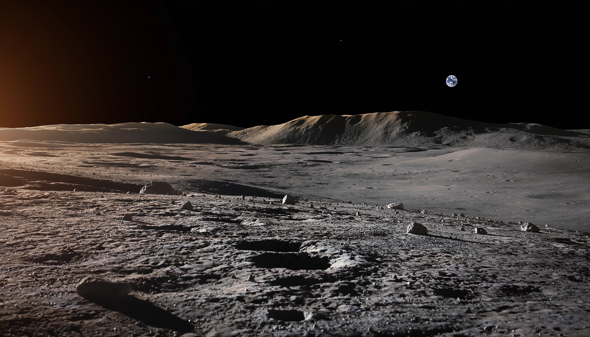

A HUMAN JOURNEY / 01
BEYOND
יש עולם שלם.
מעבר לעולם שלנו.
גללו כדי לעזוב את הקרקע.

02 — THE SILENCE
כשאין כבישים, רעש או אופק מוכר
רחוק מהכול.
קרוב יותר לעצמנו.
החלל לא מרגיש גדול בגלל המרחק. הוא מרגיש גדול כי בפעם הראשונה שום דבר לא מסתיר את קנה המידה.
03 — BLUE MARBLE
כל מה שאנחנו מכירים
נכנס לפריים אחד.
גלילה אחת משנה את קנה המידה — מהחלל השחור אל שכבת האטמוספרה הדקה ששומרת על הכול.
ATMOSPHERE / ~VISIBLE EDGE
04 — SURVIVAL, WORN
לא מדים.
חללית בגודל של אדם.
כל שכבה קיימת מסיבה אחת: להפוך סביבה שאינה מאפשרת חיים למשהו שאפשר לנשום בתוכו.
01
מגן הקסדה
שכבות הגנה ואור מסונן מאפשרות לראות גם תחת שמש ישירה וחזקה.
05 — CHOOSE A HORIZON
כדור הארץ
01 / 03המקום שממנו כל מסע מתחיל — והדבר הראשון שנראה אחרת ברגע שמתרחקים ממנו.
